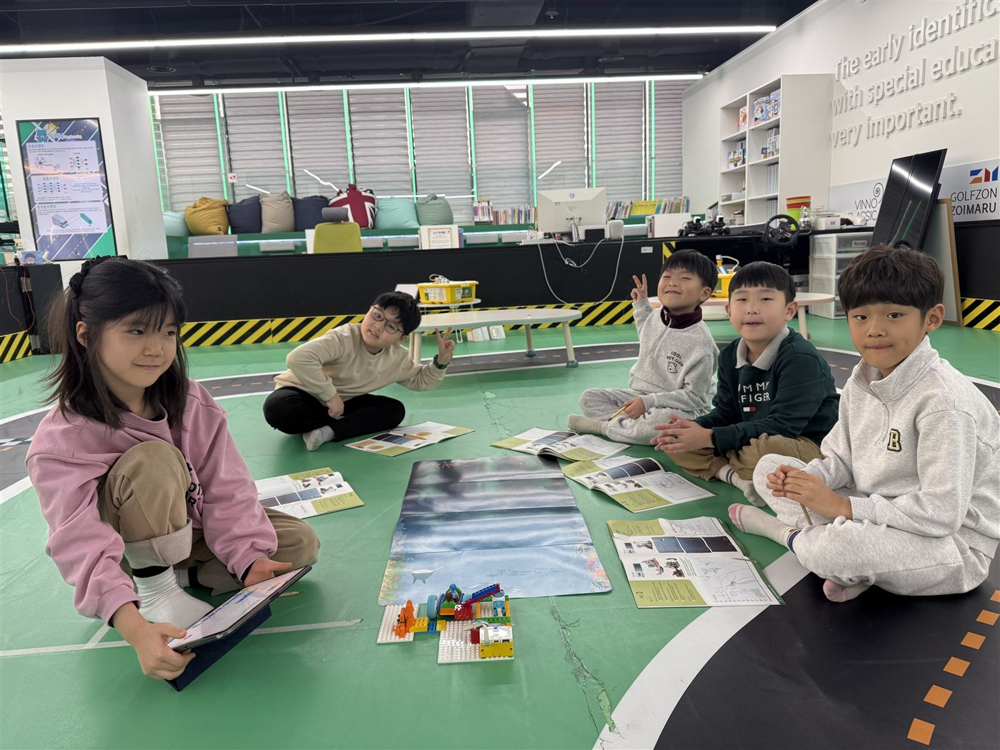

Direction
AI와 함께 새로운 가치를
만드는 아이
FOX AI연구소는 AI를 올바르게 이해하고 활용하는 능력을 통해
질문하는 힘, 창의적 사고, 디지털 윤리까지 함께 성장할 수 있습니다.
-
01
이해
AI와 디지털 도구의 원리를 이해하고 올바르게 판단하기
-
02
소통
AI에게 원하는 결과물을 정확하게 전달하며 효과적으로 소통하기
-
03
활용
문제를 해결하기 위해 AI 기술과 디지털 도구 활용하기
-
04
창작
나만의 아이디어를 결과물로 완성하고 공유하기
Why FOX AI Lab
다섯 가지
약속
AI 시대를 살아갈 아이들에게 꼭 필요한 경험을 약속합니다.

-
01
원리를 아는 진짜 AI 교육
사용법만 익히는 게 아니라, 컴퓨터 과학을 바탕으로 AI가 작동하는 원리부터 이해합니다.
-
02
스스로 답을 찾는 문제 해결력
프로젝트 기반 학습(PBL)으로 직접 질문하고, 계획하고, 해결하는 힘을 기릅니다.
-
03
AI로 직접 만드는 창작 경험
생성형 AI를 도구 삼아 글·그림·음악·게임을 나만의 결과물로 완성합니다.
-
04
보고 만지며 익히는 디지털 제작
레고·마인크래프트·파이썬으로 코딩을 눈과 손으로 체득합니다.
-
05
발표로 완성되는 표현력과 자신감
친구들과 협력·소통하고 결과를 발표하며 자신감이 자랍니다.

FAQ
학부모님이 자주 묻는 질문
처음 오시는 분들이 가장 많이 궁금해하시는 점을 모았습니다.
몇 살부터 배울 수 있나요?
유아(6세) 이상부터 초등·중등·고등, 그리고 성인까지 수준별로 운영합니다. 아이의 나이와 경험에 맞춰 알맞은 반을 안내해 드립니다.
코딩이 처음인데 따라갈 수 있을까요?
네. 블록 코딩부터 단계별 프로젝트(PBL) 과정으로 시작하기 때문에, 코딩을 처음 접하는 아이도 부담 없이 시작할 수 있습니다. 수준별 맞춤으로 진행합니다.
어떤 도구와 교재로 배우나요?
레고 에듀케이션, 마인크래프트 에듀케이션, 스크래치, 파이썬 등 검증된 공식 교육 도구와 연구소가 자체 개발한 커리큘럼을 함께 사용합니다.
단순히 프로그램 사용법만 배우는 건 아닌가요?
아닙니다. AI를 ‘이해 · 소통 · 활용 · 창작’ 네 영역으로 나눠, 원리를 이해하고 직접 만들어 보는 프로젝트 중심으로 배웁니다.
성인이나 기관 · 단체도 신청할 수 있나요?
네. 성인 과정과 함께 기관 · 단체 연수, 방과후 · 체험 프로그램도 운영합니다. 인원과 목적에 맞춰 맞춤형으로 안내해 드립니다.
수업료와 시간표가 궁금해요.
과정과 반 편성에 따라 달라집니다. 전화(1433-2700) 또는 카카오톡 채널(FOX_LC)로 문의 주시면 아이에게 맞는 과정과 일정을 자세히 안내해 드립니다.
AI와 함께 새로운 가치를 만드는 아이,
AI연구소가 함께 합니다
Future Vision
우리는 어떤
미래를
만들어갈까요?
지금 던지는 작은 질문 하나가,
세상을 바꾸는 큰 힘이 됩니다.
- 환경 문제를 해결하는 사람
- AI 스마트 도시를 설계하는 사람
- 우주로 향하는 로켓을 만드는 사람
- 아픈 사람을 돕는 AI를 만드는 사람
- 새로운 게임 세상을 만드는 사람
- 로봇과 함께 일하는 사람
- 데이터에서 답을 찾는 사람
- 사람의 마음을 읽는 AI를 만드는 사람
- 재난에서 생명을 구하는 기술을 만드는 사람
- 모두를 위한 편리함을 설계하는 사람
- 상상을 현실로 만드는 사람
- 세상에 없던 질문을 던지는 사람
Contact
우리 아이에게 맞는 과정,
지금 바로 상담해 보세요
유아 6세부터 중·고등·성인, 기관·단체까지 수준별 맞춤 운영
첫 상담에서 우리 아이에게 꼭 맞는 과정을 추천해 드립니다.